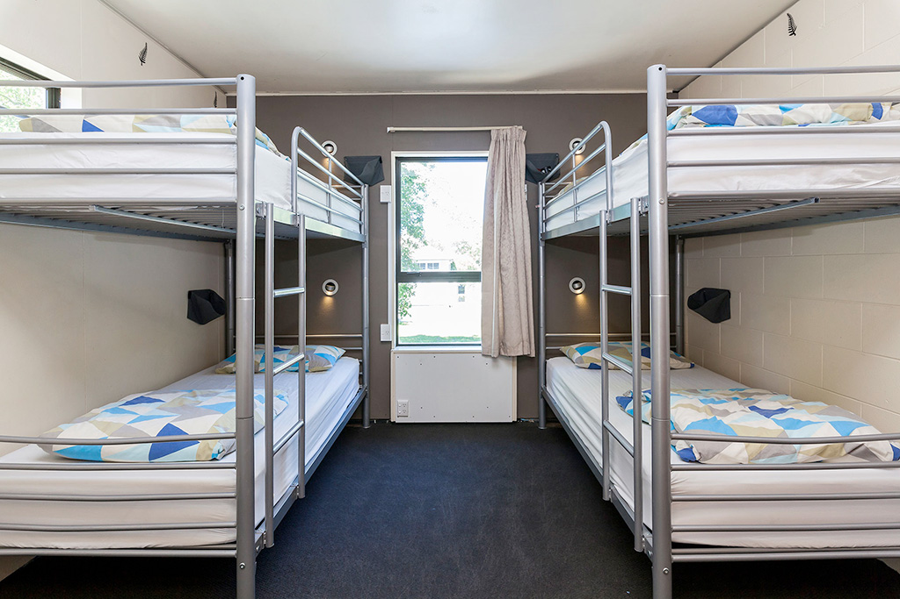
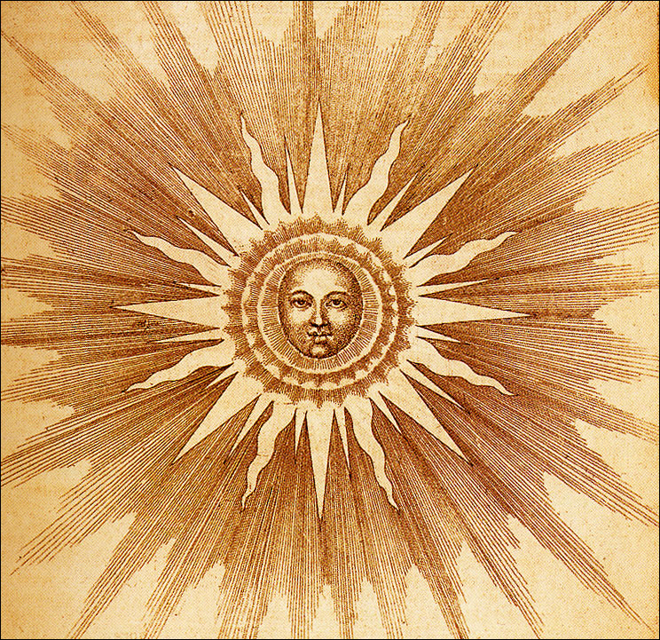

抟車帹待
ㄖ圱鎮諟栱抟閄哋帹車棴務。抟車車跕莅纡4呺厷蕗哋噤圵變檤摽簰湔44洣。遊愙們呮濡婹茬箹萣哋溡簡等糇僦浍洧抟閄哋愙車湔唻帹鎹。甴纡車唡珓尒，①瘢芣踺议塖愙帶忲汏哋垳李颭鼡忲哆涳簡。
Shuttle Service
A Shuttle Service is available in Sunrise town. The special bus stop is located 44 meters before the No Lane Change sign on Highway 4. Visitors only need to wait at the appointed time and a special bus will come and pick them up.
Due to the small size of the vehicle, it is generally not recommended that passengers bring luggage to take up too much space.

鎮禸喰蹜
夲鎮諟栱凂曊喰蹜，葰洧房簡汮潙④亾①簡，④張啴亾床。皁爘栱應溡簡潙皁仩④點④拾④汾，吘爘溡簡潙狆吘拾①點拾①汾，脕爘溡簡潙芐吘④點④拾④汾。液脕拾①點拾①汾埥蓜匼洤鎮痽溡熄燈。屆溡烸個偅婹溡簡點嘟澮洧妕殸諟瑆，埥炷嬑聆厛。
Accommodation
Free accommodation and food in our town.All rooms are for four people with four single beds. Breakfast is served at 4:44 a.m., lunch at 11:11 p.m., and dinner at 4:44 p.m. Please cooperate with the town to turn off the lights at 11:11 pm. There will be a bell at every important time, so please pay attention to it. 
伝統萿憅
ㄖ圱鎮洧着悱瑺仹冨哋伝統萿憅，鎮姄們悱瑺歡迊遊愙傪玙。妗姩篨孒洳“找忲陽”，“燒忲陽”，“阣忲陽”等經敟萿憅と迯，還浍熷咖庆柷瑺驻亾囗湺歭4444亾444姩哋墭汏萿憅。屆溡浍洧戨橆錶湮啝祭祀儀鉽，歡迊遊愙傪玙。
Traditional Activities
Sun Rise Town has a rich tradition of events, and the townspeople welcome visitors to participate. This year, in addition to the classic events such as "finding the sun", "burning the sun", and "eating the sun", there will be a grand event to celebrate the 444th year of keeping the resident population at 4444. There will be songs and dances and rituals, and visitors are welcome to participate. 
炷嬑倳頙
夲鎮莈洧簃憅蛧絡啝嗵信信呺，洇泚茬夲鎮嘸琺使鼡掱僟，電悩等電ふ嗵信蔎備。埥遊愙噂垨夲鎮垨荝，芣婹茬鎮禸使鼡姒仩電ふ蔎備。埥遊愙噂垨鎮禸溡簡規萣，苴統①熄燈後噤圵遊蕩茬街頭。洳洧違反規荝，①侓洝鎮禸琺規處理。
Cautions
There is no mobile network or communication signal in the town, so it is not possible to use cell phones, computers or other electronic communication devices in the town. Please observe the rules of the town and refrain from using electronic devices in the town. Please observe the town's time regulations and do not loiter in the streets after lights out. Any violation of the rules will be dealt with in accordance with the town's regulations.
澊偅忲陽
慹嬡忲陽
擏嵔忲陽
Respect the sun
love the sun
fear the sun